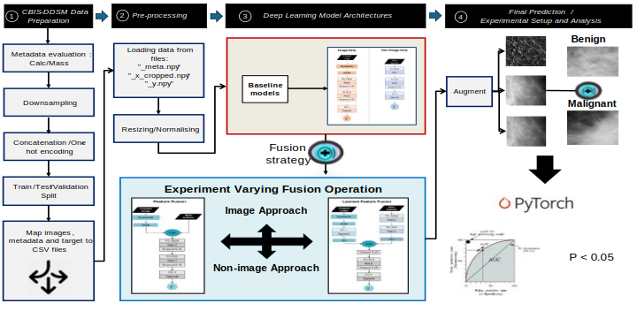

Evaluating the Role of Multimodal Clinical Data in Breast Cancer Diagnostic Classifier
The process of diagnosing breast cancer is fundamentally multimodal in nature. In real-life clinical scenarios, physicians utilise mammography scan images and clinical information to assess cancer. With advances in artificial intelligence, technology is being increasingly integrated into healthcare to support human decision-making. Despite this, several seminal deep learning approaches for breast cancer classification are primarily based on using image or non-image textual clinical data only, without effectively integrating both modalities. Using an established study as a reference, this project compared the diagnostic classification performance of unimodal and multimodal approaches, with the aim of gaining insights into how the performance of a classifier changes when image-level data is combined suitably with non-image clinical data.
This project used the CBIS-DDSM dataset, which comprises 6,671 breast images from 1,566 participants. Key sampling and preprocessing steps, such as binary encoding and image preprocessing, including pixel value extraction and normalisation, were implemented. Subsequently, the breast images were linked with relevant non-image features, including breast density, mass shape, and calcification type. Unimodal baseline models based on image and non-image data were trained first, following which, the two models with distinct modality fusion strategies were trained. The assessment was conducted using the area under the receiver operating characteristic curve (AUC) and specificity at 95% sensitivity. In the most optimal iteration of the image-only model, an AUC of 0.53 (95% CI: 0.47, 0.6) and a specificity at 95% sensitivity of 10% were achieved. In contrast, the top-performing non-image-only model iteration achieved an AUC of 0.74 (95% CI: 0.67, 0.79) and a specificity at 95% sensitivity of 29%. The finest feature fusion model attained an AUC of 0.67 (95% CI: 0.6, 0.73) with a specificity at 95% sensitivity of 17%. Notably, the learned feature fusion model surpassed the feature fusion model, achieving an AUC of 0.74 (95% CI: 0.68, 0.8) and a specificity at 95% sensitivity of 26%.